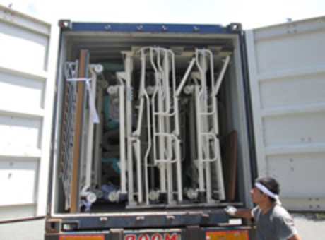
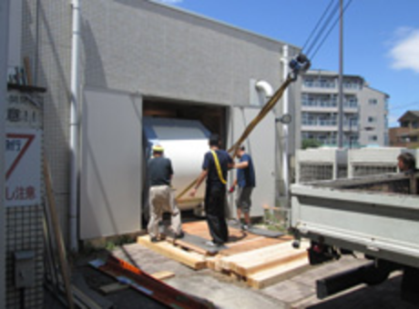
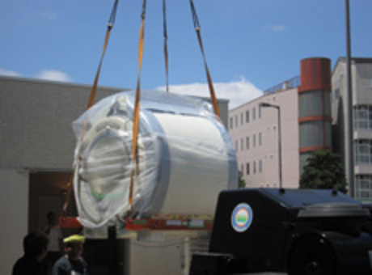

J-Pad

Fair Medical is associated with the Japanese manufacturer of Haemostasis Pads (J-Pads) for distribution and marketing rights.
J-Pad is a gently applied hemostasis material designed for injured sites and emergency use. It supports bleeding control and easy transfer to hospitals for treatment.
ADVANTAGE
- It coagulates red blood cells and suppresses bleeding.
- It is quicker in action than other products like gauze or cotton bandage.
- It can minimize the possibility of secondary infection.
- Easy storage and transportation.
MECHANISM OF J-PAD
J-Pad is triple layered bandage that is effective in stimulating rapid blood coagulation.


For inquiries about J-PAD, please contact the following registration form.Click Here >>